Unified World Models: Coupling Video and Action Diffusion for Pretraining on Large Robotic Datasets
1. 论文速览
| 阅读定位项 | 紧凑结论 |
|---|---|
| 论文要解决什么 | 大规模 imitation learning 依赖高质量带动作演示，而大量视频数据没有 action annotation；传统 policy 也没有显式学习环境动态。 |
| 作者的方法抓手 | 把 action diffusion 和 video diffusion 耦合进同一个 transformer，但让 $t_a$ 和 $t_{o'}$ 独立采样/控制；$t=T$ 近似“mask/marginalize”，$t=0$ 近似“condition”。 |
| 最重要的结果 | 真实机器人五任务中 UWM 在 ID/OOD 均优于 DP、PAD、GR1，并且 action-free DROID video cotraining 进一步提升；LIBERO 平均成功率 0.79，高于 DP 0.71、PAD 0.57、GR1 0.58。 |
| 阅读时要注意的点 | UWM 不是离散 token 扩散，而是连续 latent image/action diffusion；核心创新是独立 modality timestep 带来的条件/边缘化控制和 action-free video training。 |
难度评级：★★★★☆。需要理解 DDPM、conditional diffusion、Diffusion Policy、world model、inverse dynamics、latent diffusion 和机器人预训练/微调实验协议。
关键词：Unified World ModelAction DiffusionVideo DiffusionIndependent TimestepsAction-Free Videos
核心贡献清单
- 统一 policy 与 world modeling。UWM 用一个模型覆盖 $p(a|o)$、$p(o'|o,a)$、$p(a|o,o')$、$p(o'|o)$，把 imitation learning 和 world model 的范式连接起来。
- 独立 diffusion timesteps。和 PAD 的 shared timestep 不同，UWM 独立采样/设置 $t_a$ 和 $t_{o'}$，从而实现变量的 conditioning 或 marginalization。
- 利用 action-free video。对无动作视频把 $t_a=T$，用高斯噪声补动作，仍使用同一个训练 objective，使视频数据能进入 policy pretraining。
- 真实与模拟验证。作者在 DROID setup 的五个真实任务、LIBERO OOD 任务、forward/inverse dynamics、OOD 分类评估、from-scratch vs pretraining 和 Internet video cotraining 上验证设计。
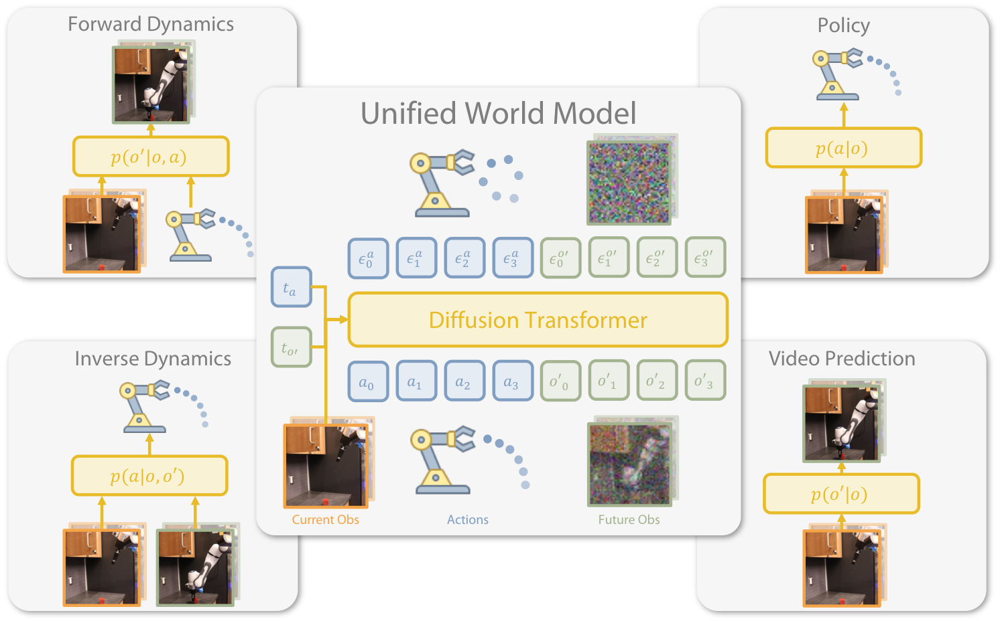
2. 动机
2.1 要解决的问题
行为克隆和 Diffusion Policy 已经证明，只要有高质量专家演示，就能学到可靠的 manipulation policy。但机器人数据收集昂贵，且 policy 通常只学习从 observation 到 action 的映射，不显式建模“动作会如何改变未来观测”。另一方面，世界模型和视频模型能学习动态，但视频常没有动作标签，难以直接用来训练 policy。
2.2 已有方法的局限
- 普通 imitation learning：依赖 action-labeled expert demonstrations，难以利用 action-free videos；OOD 条件下容易脆弱。
- 单独 world model：可以预测未来图像，但如何转化为更好的 action policy 并不直接。
- PAD 类 joint video-action diffusion：共享同一个 timestep 生成 action 和 video，只能从 joint distribution 采样，缺少灵活的 marginal/conditional inference。
2.3 本文解决思路
作者的关键 insight 是把 diffusion timestep 看作连续版 masking：$t$ 越接近 $T$，变量越像被完全 mask；$t$ 越接近 $0$，变量越接近干净输入。于是只要给 action 和 future observation 各自独立 timestep，就能在推理时把某个变量“遮掉”做 marginalization，或固定为干净值做 conditioning。
4. 方法详解
4.1 问题设定
有两类数据：带动作专家数据 $\mathcal{D}_e=\{(o_i,a_i,o'_i)\}_{i=1}^N$，以及无动作视频数据 $\mathcal{D}_{af}=\{(o_i,o_{i+1})\}_{i=1}^M$。模型希望从同一套机制中得到四种分布：
| 模式 | 分布 | 用途 |
|---|---|---|
| Policy | $p(a|o)$ | 给定当前观测，采样要执行的动作。 |
| Forward dynamics | $p(o'|o,a)$ | 给定动作，预测下一观测。 |
| Inverse dynamics | $p(a|o,o')$ | 给定目标下一观测，推断如何到达。 |
| Video prediction | $p(o'|o)$ | 不指定动作，预测未来观测。 |
4.2 Coupled Video-Action Diffusion
UWM 的 score/noise prediction network 输入当前观测 $o$、带噪动作 $a_{t_a}$、带噪下一观测 $o'_{t_{o'}}$、动作 timestep $t_a$ 和下一观测 timestep $t_{o'}$，输出两个噪声预测 $\epsilon_a^\theta,\epsilon_{o'}^\theta$。
训练时让模型见到 action 和 future observation 的所有噪声组合，因此它既会“看图预测动作”，也会“看动作预测未来图像”，还能在两者都带噪时共享信息。
$$\ell(\theta)= \mathbb{E}\left[ w_a\|\epsilon_a^\theta-\epsilon_a\|_2^2+ w_{o'}\|\epsilon_{o'}^\theta-\epsilon_{o'}\|_2^2 \right]$$ $$\epsilon_a^\theta,\epsilon_{o'}^\theta=s_\theta(o,a_{t_a},o'_{t_{o'}},t_a,t_{o'})$$| $a_{t_a}$ | 动作 chunk 加噪后的版本，$a_{t_a}=\sqrt{\bar\alpha_{t_a}}a+\sqrt{1-\bar\alpha_{t_a}}\epsilon_a$。 |
| $o'_{t_{o'}}$ | 下一观测 latent 加噪后的版本，$o'_{t_{o'}}=\sqrt{\bar\alpha_{t_{o'}}}o'+\sqrt{1-\bar\alpha_{t_{o'}}}\epsilon_{o'}$。 |
| $w_a,w_{o'}$ | 动作 loss 和图像 loss 的权重；附录超参表中二者都为 1.0。 |
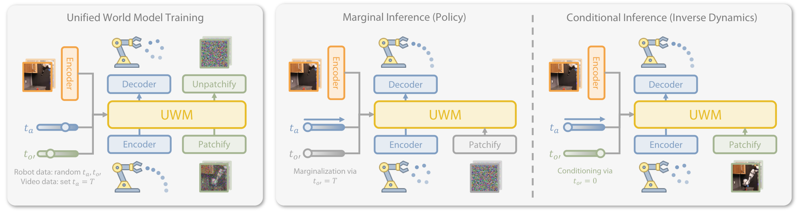
4.3 四种推理模式
| 推理模式 | timestep 设置 | 含义 |
|---|---|---|
| Policy $p(a|o)$ | $t_{o'}=T$，$o'_T\sim\mathcal{N}(0,I)$；对 $a$ 反向扩散。 | 把未来观测边缘化，只生成动作。 |
| Video prediction $p(o'|o)$ | $t_a=T$，$a_T\sim\mathcal{N}(0,I)$；对 $o'$ 反向扩散。 | 把动作边缘化，只预测未来视频。 |
| Forward dynamics $p(o'|o,a)$ | $t_a=0$，$a_0=a$；对 $o'$ 反向扩散。 | 把动作作为干净条件，预测下一观测。 |
| Inverse dynamics $p(a|o,o')$ | $t_{o'}=0$，$o'_0=o'$；对 $a$ 反向扩散。 | 把目标下一观测作为干净条件，生成动作。 |
4.4 Architecture
UWM 使用 diffusion transformer + AdaLN conditioning。当前观测由 ResNet-18 编码；$t_a,t_{o'}$ 用 sinusoidal timestep encoder 编码；图像 diffusion 采用 latent diffusion，原始 $224\times224\times3$ 图像经 frozen SDXL VAE 编成 $28\times28\times4$ latent，再用 $(4,4,2)$ spatiotemporal patchifier 切成 patch embeddings。动作 chunk 每步用浅 MLP 编码，和 image patch embeddings、learnable register tokens 拼接后输入 transformer。
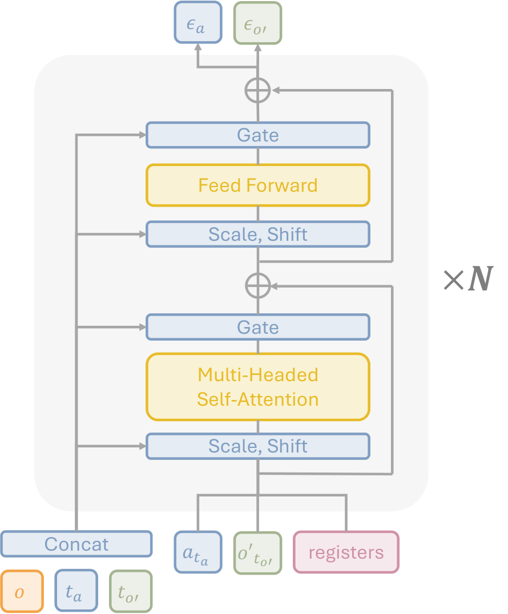
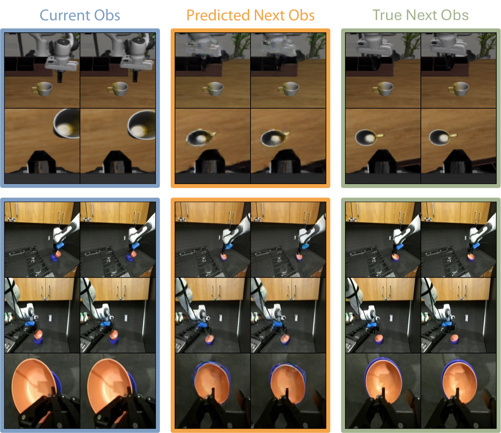
4.5 训练与实现细节
附录 Implementation 给出关键超参：observation length $h_o=2$，action length $h_a=16$，rollout length $h'_a=8$，embed dim 768，12 层 transformer，12 heads，8 个 registers；训练 diffusion steps 100，推理 steps 10，DDIM sampler；batch size 为 36×4 pretraining、36×2 finetuning；AdamW，learning rate $10^{-4}$，weight decay $10^{-6}$。
训练 100K steps DROID pretraining 使用 4 张 NVIDIA A100，约 24 小时。部署时执行前 $h'_a=8$ 个动作预测后 replan。
5. 实验与结果
5.1 实验设置
真实机器人实验使用 Franka Panda 和 DROID manipulation platform。观测包括两个 scene cameras 和一个 wrist camera，另加 overhead evaluation camera 用于对齐初始化；控制频率 10 Hz；动作空间是 delta end-effector pose 加连续 gripper 状态。
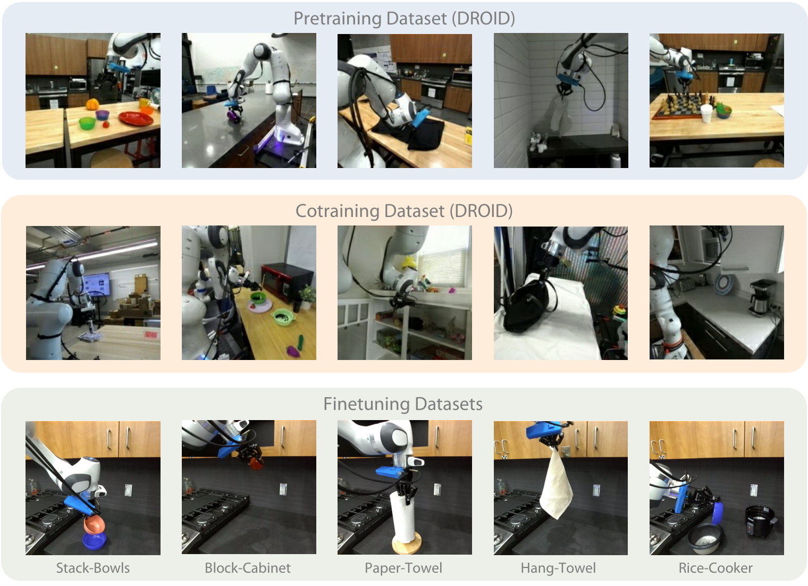
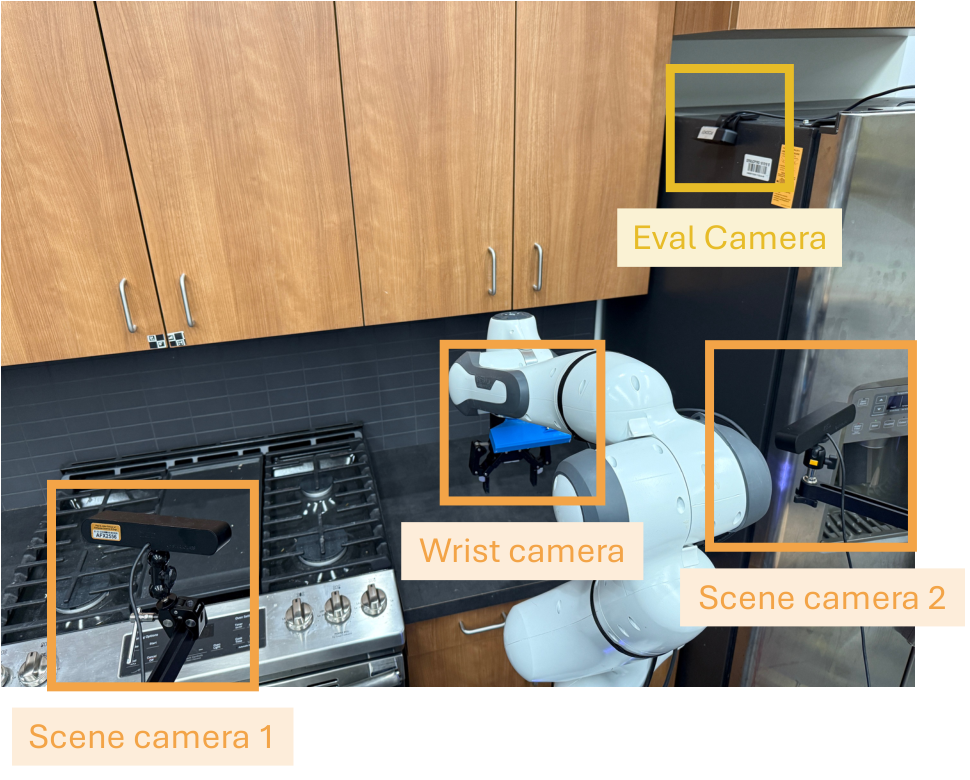
五个真实任务分别是 Stack-Bowls、Block-Cabinet、Paper-Towel、Hang-Towel、Rice-Cooker。前四个任务评估 50 个初始化，Rice-Cooker 因难度高只评估 20 个接近数据分布的初始化；每个初始化给每个方法 3 次尝试。
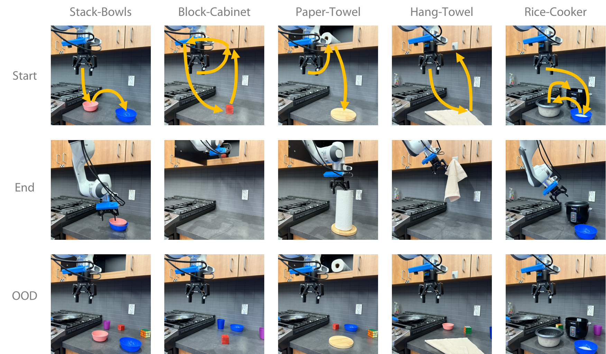
5.2 Real Robot Results
| 任务 | UWM Pretrain / Cotrain | 最佳基线表现概览 |
|---|---|---|
| Stack-Bowls ID / OOD | 0.86 / 0.92；0.76 / 0.84 | GR1 pretrain 0.66/0.48；DP 0.48/0.36；PAD 很低。 |
| Block-Cabinet ID / OOD | 0.76 / 0.84；0.60 / 0.72 | GR1 cotrain 0.74/0.64 最接近；DP OOD 0.26。 |
| Paper-Towel ID / OOD | 0.78 / 0.86；0.78 / 0.84 | GR1 pretrain 0.60/0.60；DP 0.52/0.48。 |
| Hang-Towel ID / OOD | 0.82 / 0.86；0.64 / 0.76 | GR1 0.66/0.48；DP 0.64/0.28。 |
| Rice-Cooker ID | 0.60 / 0.65 | GR1 pretrain 0.40，cotrain 0.25；DP 0.35；PAD 0。 |
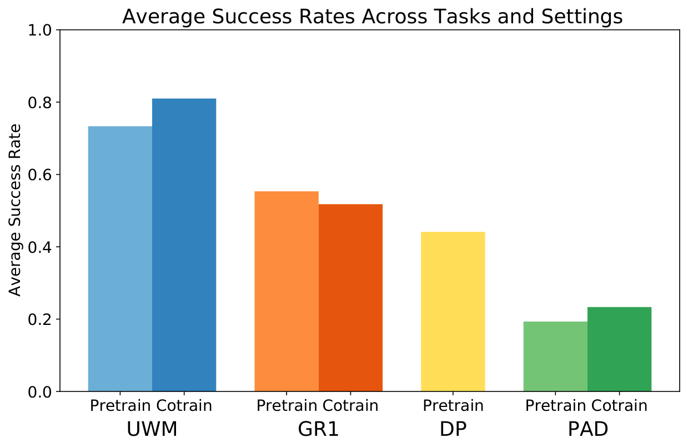
论文对真实结果的解释是：UWM 通过 action/video feature sharing 和对不同 conditional/marginal distributions 的训练，学习了动作与图像观测之间的因果关系。GR1 是较强回归式 baseline，但视频 cotraining 有时稀释 action learning signal；PAD 性能差被作者归因于 raw-pixel concatenation conditioning 在同等模型容量下较难。
5.3 LIBERO Simulation
模拟实验使用 LIBERO-100：LIBERO-90 的 4500 条轨迹做预训练，随机选 LIBERO-10 中 5 个任务做评估，每个任务用 50 个 expert demos 微调。作者扩大物体初始化范围 0.03 并移除背景物体制造 OOD。
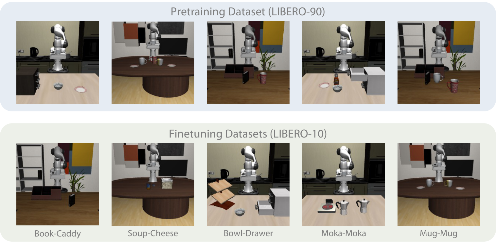
| 方法 | Book-Caddy | Soup-Cheese | Bowl-Drawer | Moka-Moka | Mug-Mug | Average |
|---|---|---|---|---|---|---|
| UWM | 0.91 ± 0.07 | 0.93 ± 0.01 | 0.80 ± 0.02 | 0.68 ± 0.02 | 0.65 ± 0.01 | 0.79 ± 0.11 |
| DP | 0.73 ± 0.10 | 0.88 ± 0.02 | 0.77 ± 0.02 | 0.65 ± 0.03 | 0.53 ± 0.05 | 0.71 ± 0.12 |
| PAD | 0.78 ± 0.04 | 0.47 ± 0.04 | 0.74 ± 0.05 | 0.59 ± 0.08 | 0.25 ± 0.04 | 0.57 ± 0.19 |
| GR1 | 0.77 ± 0.03 | 0.65 ± 0.05 | 0.62 ± 0.03 | 0.46 ± 0.04 | 0.38 ± 0.05 | 0.58 ± 0.14 |
5.4 Analysis and Ablations
| 实验 | 设置 | 结果/结论 |
|---|---|---|
| Forward dynamics | 固定 $t_a=0$，使用 ground-truth actions，diffuse future observations。 | 可视化显示 predicted next obs 接近 true next obs，说明条件动态建模有效。 |
| Inverse dynamics tracking | 给定专家未来观测，使用 inverse dynamics 生成动作跟踪轨迹。 | trajectory length 限制下，Book-Caddy policy 0.47 vs inverse 0.65；Soup-Cheese policy 0.26 vs inverse 0.55。 |
| Categorized OOD | Stack-Bowls / Block-Cabinet 的 lighting、background、clutter。 | Stack-Bowls：UWM cotrain 21/30，pre 15/30，DP 12/30；Block-Cabinet：15/30，8/30，6/30。 |
| Registers | 8 registers / 4 registers / no registers / cross-attention UWM。 | Book-Caddy 0.88 / 0.83 / 0.81 / 0.78；Soup-Cheese 0.90 / 0.86 / 0.85 / 0.86。 |
| Learning objective | future obs reconstruction vs current obs reconstruction vs no reconstruction。 | Stack-Bowls 0.86 / 0.70 / 0.48；Block-Cabinet 0.76 / 0.66 / 0.60，证明动态预测比纯当前图像重建更有用。 |
| Internet videos | robot data + robot videos / robot data + Internet videos / robot data only。 | Stack-Bowls 0.92 / 0.88 / 0.86；Block-Cabinet 0.84 / 0.80 / 0.76。互联网视频有提升，但不如 in-domain robot videos。 |
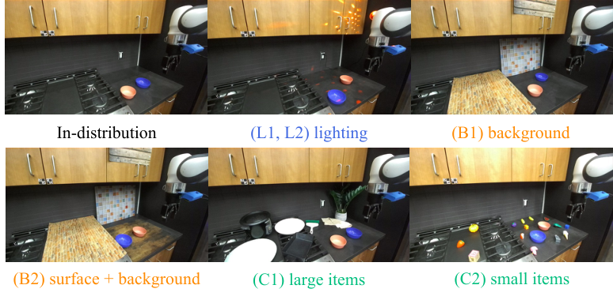
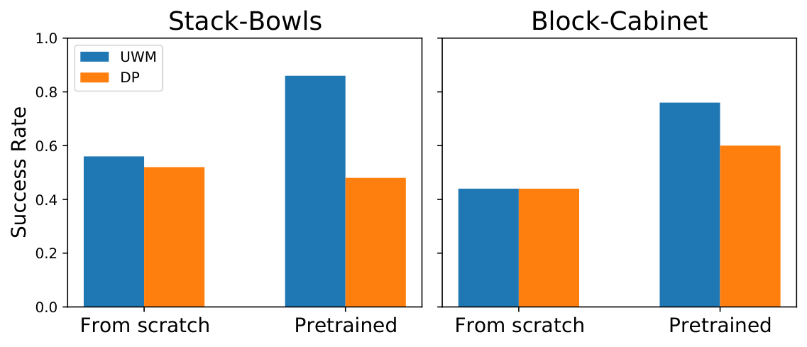
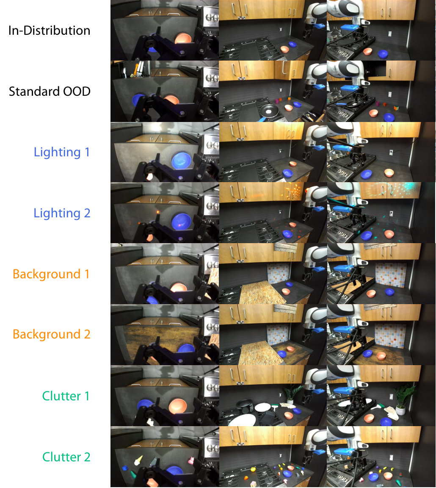
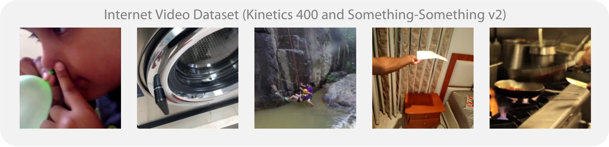
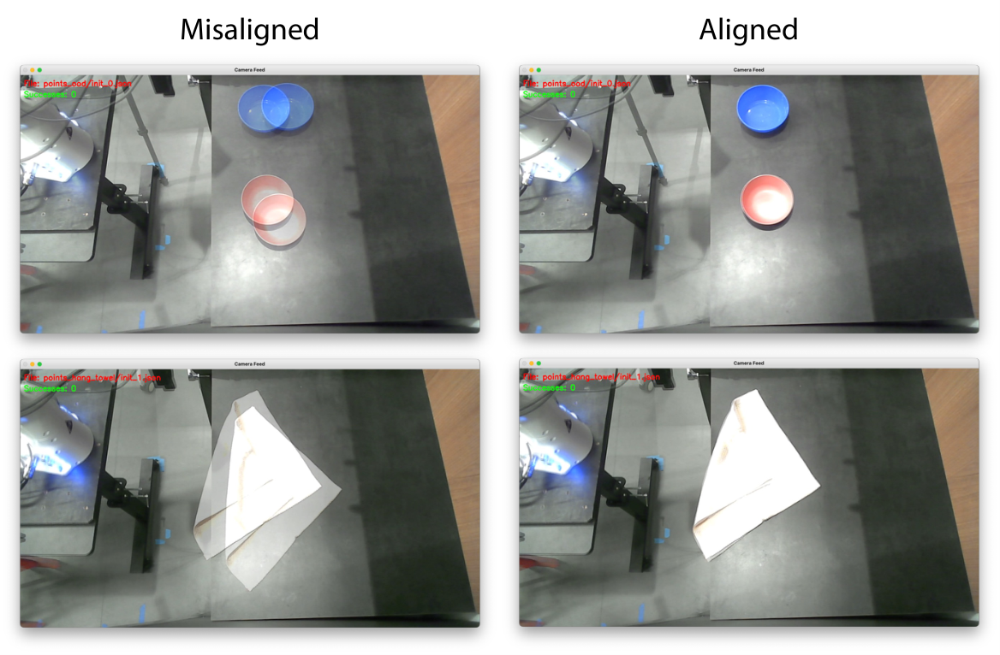
6. 论文内分析与讨论
6.1 作者给出的核心解释
- 额外监督来自同一数据。UWM 不只是从 demonstration 中学动作，还要预测 future observations，因此从同一条轨迹中获得更多动态监督。
- 独立 timestep 让模型学习因果关系。训练时随机组合 $t_a,t_{o'}$，模型要在不同噪声/遮挡条件下恢复 action 和 future observation，因此接触到不同 marginal/conditional distributions。
- 视频 cotraining 的自然入口。无动作视频只需把动作 timestep 固定为 $T$，不需要额外架构或专门伪动作标注。
- 真实世界优于模拟的提升更明显。作者认为当前模拟动态较简单，因此 OOD 改善幅度小于真实世界。
6.2 失败模式
附录 Real-World Failure Modes 指出：多相机仍可能存在某些物体只被一个相机看到的困难视角；物体行为本身也会造成失败，例如 Paper-Towel 放到木平台后角度不好会倒，Stack-Bowls 中基线会在拿起粉色碗后混淆蓝色碗和干扰物。
7. 分析、局限与边界
7.1 这篇论文最有价值的地方
最有价值的是把“用视频学动态”和“用演示学动作”合并成一个可控的连续扩散概率模型，而不是再加一个独立 video predictor。通过独立 $t_a,t_{o'}$，UWM 让 policy、forward dynamics、inverse dynamics、video prediction 都是同一个训练目标的不同推理切片。这直接解释了为什么 action-free video 可以进入训练：缺失动作在扩散意义上就是 $t_a=T$ 的完全噪声变量。
7.2 结果为什么站得住
证据链比较完整：真实机器人任务覆盖刚体、可变形物体和长时序任务；每个任务都有 ID/OOD；DROID robot video cotraining 和 Internet video cotraining 都单独验证；LIBERO 提供标准模拟 benchmark；forward/inverse dynamics 展示 UWM 不是只改善 policy 分数，而确实能在不同 inference mode 下工作。消融进一步表明 future obs reconstruction、registers 和 AdaLN conditioning 都有定量贡献。
7.3 作者自述局限
- 还没有真正利用大规模人类视频。作者明确说尚未解决 embodiment gap；Internet videos 实验只是 Kinetics-400/SSV2 混合的初步验证。
- Forward dynamics reconstruction 有伪影。作者认为这些 artifacts 可能降低用模型做 planning 的效果，需要吸收生成模型领域的新进展。
- 需要更密集的视频预测。论文预计更 dense 的 video prediction 可能进一步提升性能。
- 真实任务仍是受控平台。DROID setup、Franka Panda、5 个任务和有限 demo 数支持结论，但不等于已证明跨 embodiment 大规模泛化。
7.4 适用边界
UWM 适合有 action-labeled robot trajectories，并希望同时利用额外 action-free robot/video data 的场景。它假设 observation/action/future observation 能被连续扩散建模，并且未来图像可作为有用动态监督。对于需要长时间规划、多机器人形态迁移、高精度接触力控制或人类视频到机器人动作的大跨度迁移，论文还没有给出充分证据。
8. 可复现性审计
| 复现要素 | 论文/项目给出的信息 | 审计状态 |
|---|---|---|
| 代码 | Project page 提供官方 GitHub：WEIRDLabUW/unified-world-model。 | 已找到 |
| 源码和图表 | arXiv 提供 LaTeX 源码和 14 张独立 PDF 图；本报告已全部转换为 PNG。 | 可检查 |
| 数据 | DROID、LIBERO、Kinetics-400、Something-Something-v2 为公开数据；真实任务 finetuning demos 为作者自采。 | 部分可复现 |
| 模型结构 | ResNet-18、SDXL VAE、DiT/AdaLN、12 层 12 heads、8 registers、action/image latent shapes 均给出。 | 较完整 |
| 训练配置 | 100K pretraining、10K/20K/50K finetuning、DDIM 10 inference steps、AdamW、batch/lr/weight decay 给出。 | 较完整 |
| 真实评估 | 任务定义、demo 数、评估条件数、3 attempts per initialization、OOD 设置和失败模式给出。 | 较完整 |